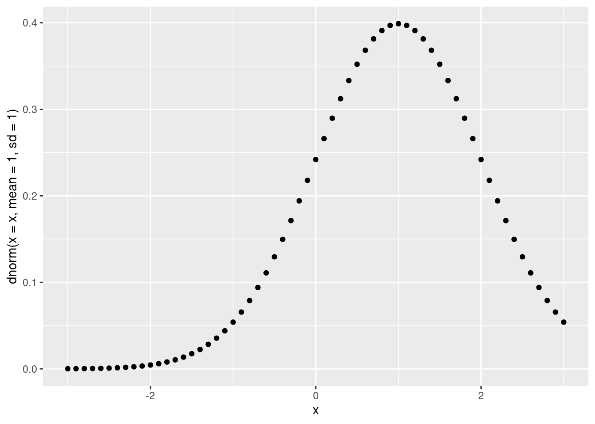
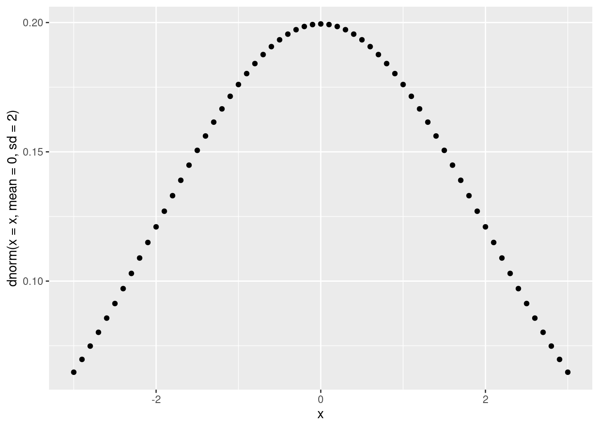

[1] 0.3989423[1] 0.3989423Instance of: probability distribution
AKA: Normal; Gaussian distribution; Standard normal; bell curve; \(\varphi(x)\); \(X \sim \mathrm{N}()\); \(\Phi(x)\); normal deviate
Distinct from:
English: The normal distribution is a symmetric bell shaped distribution that has several important mathematical properties: it the distribution with maximum entropy of all possible distributions with a specified mean and variance; it is the distribution that a binomial distribution tends toward as the sample goes to infinity (infinite coin flips); and it is the distribution that the mean of samples from any other distribution with finite mean and variance will tend towards (central limit theorem). Because of its centrality and generality, many real world natural phenomenon will tend to be normally distributed.
Some related ideas * The mean of any set of variates with finite mean and variance tends to be normally distributed, Central Limit Theorem. * The sum or subtraction of two normally distributed variables is also normally distributed. * The ratio of two normally distributed variables is Cauchy distributed.
Formalization:
Some intuition for the formalization of the pdf
It approximates the pdf of a Binomial Distribution with the same mean and variance as N goes to infinity (Tushev 2021).
The denominator \(\frac{1}{\sigma\sqrt(2\pi)}\) can be thought of as a constant for normalizing/scaling the distribution taking into account the variance and making sure it sums to 1.
The numerator \(\mathrm{e}^{-\frac{1}{2}(\frac{x-\mu}{\sigma})^2}\) can be thought of as several cascading functions that together pound the curve into the desired shaped
Euler’s number appears \(e^A\) as an arbitrary convenient base and could be replaced with any other positive constant with some modification(Tushev 2021)
Standard normal distribution with mean zero and standard deviation one \[ f(x)=\frac{\mathrm{e}^{-\frac{1}{2}(x)^2}}{\sqrt{2\pi}} \]
Where \(\mathrm{e}\) is Euler’s number.
x is event.
The denominator \(\sqrt{2\pi}\) acts to scale.
[1] 0.3989423[1] 0.3989423Including \(\mu\) and \(\sigma\) allow us to shift and stretch the distribution \[ f(x)=\frac{\mathrm{e}^{-\frac{1}{2}(\frac{x-\mu}{\sigma})^2}}{\sigma\sqrt{2\pi}} \]


Cites: Wikipedia ; Wikidata ; Wolfram
A Simple Intuition Behind The Normal Distribution Equation(Tushev 2021)
The Normal Distribution as a Limit of Binomial Distributions(Sarty 2022)
Code
library(DBI)
# Create an ephemeral in-memory RSQLite database
#con <- dbConnect(RSQLite::SQLite(), dbname = ":memory:")
#dbListTables(con)
#dbWriteTable(con, "mtcars", mtcars)
#dbListTables(con)
#Configuration failed because libpq was not found. Try installing:
#* deb: libpq-dev libssl-dev (Debian, Ubuntu, etc)
#install.packages('RPostgres')
#remotes::install_github("r-dbi/RPostgres")
#Took forever because my file permissions were broken
#pg_lsclusters
require(RPostgres)Loading required package: RPostgresEnglish: Formalization:
\[ \]
Cites:
Code